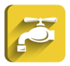
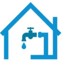

Reparaciones generales
Reparación de fugas de agua en tuberías empotradas, expuestas o soterradas. Se tiene experiencia en redes de PVC hidráulico y sanitario, CPVC en redes de agua caliente, cobre hidráulico soldado, acero galvanizado, polipropileno roscado y por termofusión. Se aportan y trasladan los materiales hidráulicos a las obras.
Cuarto de baños
Diseño, trazado y montaje de todas las redes sanitarias en interior y exterior. Montaje del sistema hidráulico de agua fría y caliente. Montaje de muebles sanitarios, accesorios hidráulicos y enlucido interior.
Cocinas
Diseño, trazado y montaje de toda la red sanitaria en interior y exterior. Montaje del sistema hidráulico de agua fría y caliente. Montaje de fregaderos, accesorios sanitarios, tecnológicos y enlucido. Montaje de campanas y conductos de extracción de gases calientes.
Cuarto de lavado
Diseño, trazado y montaje de toda la red sanitaria en interior y exterior. Montaje del sistema hidráulico de agua fría y caliente. Montaje y empotramiento de la caja de interconexión hidráulica y su interconexión. Montaje hidráulico y electromecánico de los equipos de lavado y secado. Montaje de conductos de extracción de gases calientes de las secadoras al exterior.
Instalaciones de redes sanitarias
Diseño, trazado y montaje de redes sanitarias en interior y exterior de la edificación. Montaje de los bajantes pluviales y salida de gases desde planta alta a su canalización. Montaje de trampas de grasas y registros sanitarios en exteriores. Conexión de las tuberías sanitarias con la red de la ciudad.
Equipos de bombeo, recirculación y de presión
Ofrecemos el cálculo, la selección y suministro del equipo de bombeo requerido. Se construyen las bases soportes en hormigón o metal. Realizamos el montaje mecánico, hidráulico y eléctrico de estos sistemas. Montaje de los dispositivos de control automático y control de nivel en tanques y cisternas. Diseño, trazado y montaje de todas las redes hidráulicas requeridas para el llenado de los sistemas de almacenamiento.
Equipos para el calentamiento de agua
Montaje de calentadores de agua eléctricos y a gas, en línea doméstica. Montaje de calentadores de agua eléctricos y a gas de porte industrial. Diseño y montaje de instalaciones térmicas solares domésticas e industriales, con sistema termosifónico o de circulación forzada.
Tanques para almacenar agua potable
Suministro, transportación y montaje de tanques de diferentes volúmenes. Tanques plásticos verticales y horizontales de gran volumen. Pueden ser montados sobre cubiertas, torres o soterrados. Se construyen las bases soportes en hormigón o metal. Realizamos el montaje mecánico, hidráulico y eléctrico de todo el sistema hidráulico.
Mantenimiento y reparación
Se oferta un plan de mantenimiento preventivo y correctivo a todos los equipos eléctricos de flujo, sistema de calentamiento de agua, filtros mecánicos, muebles sanitarios y accesorios hidráulicos. Se reparan todo tipo de electrobombas y calentadores eléctricos y a gas. Se reparan tanques plásticos perforados o con rajaduras.

Proyectos integrales
Se entregan Proyectos Ejecutivos de remodelación de locales habitables, inmuebles comerciales, talleres, naves y todo tipo de Obra Nueva. Incluye la Memoria Descriptiva, listado de materiales, Presupuesto de Obra, Juego de Planos de arquitectura y de estructura civil, hidráulicos y eléctricos.